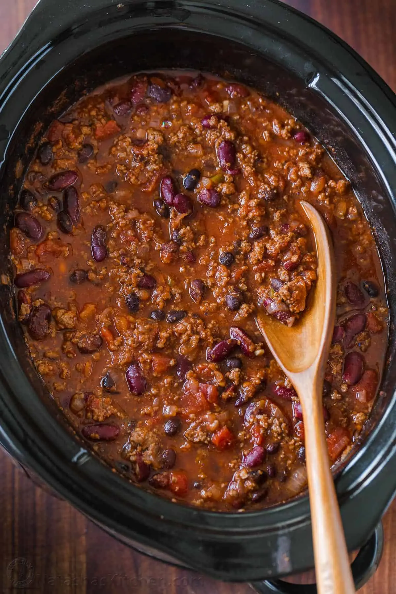

Chili Recipe

Large Filling Crockpot of Chili
A very simple chili recipe that's guaranteed to fill your stomach and your fridge/freezer with leftovers (if
you make
it right there won't be any leftovers!). All this recipe requires of you will be a crockpot and time,
nothing
extravagant with the ingredients. Can make some corn bread as a side to really enjoy your meal.
Ingredients
- 1 pound ground beef
- 3/4 cup diced onions
- 3/4 cup diced celery
- 3/4 cup diced green bell peppers
- 2 cloves garlic minced
- 26oz. can crushed tomatoes
- 1-15oz. can kidney beans with liquid
- 1-15oz. can kidney beans drained
- 1-15oz. can cannellini beans with liquid
- 1-15oz. can cannellini beans drained
- 1/2tbs. chili powder
- 1/2tsp. dried parsley
- 1tsp. salt
- 3/4tsp. dried basil
- 3/4tsp. dried oregano
- 1/4tsp. ground black pepper
- Dash of hot sauce
- Optional: Diced scallions/green onions
Steps
- Cook ground beef in a pan until brown. Make sure to drain grease before adding it to the crockpot.
- Dice onions, celery, bell peppers, and optionally green onions. Mince garlic cloves before gathering all
ingredients together.
- Add all ingredients into the crockpot (apart from green onions if you used them though I won't stop you
if you really want to) and stir the mixture. Place lid on crockpot and cook for 8 hours if on low or 4-6
hours if on high.
- After chili is thouroghly cooked, take lid off and let it cool as it may burn you if you eat it too quickly.
You can serve it with green onions, sour cream, and corn bread if you desire. Enjoy your meal.
Return to Homepage